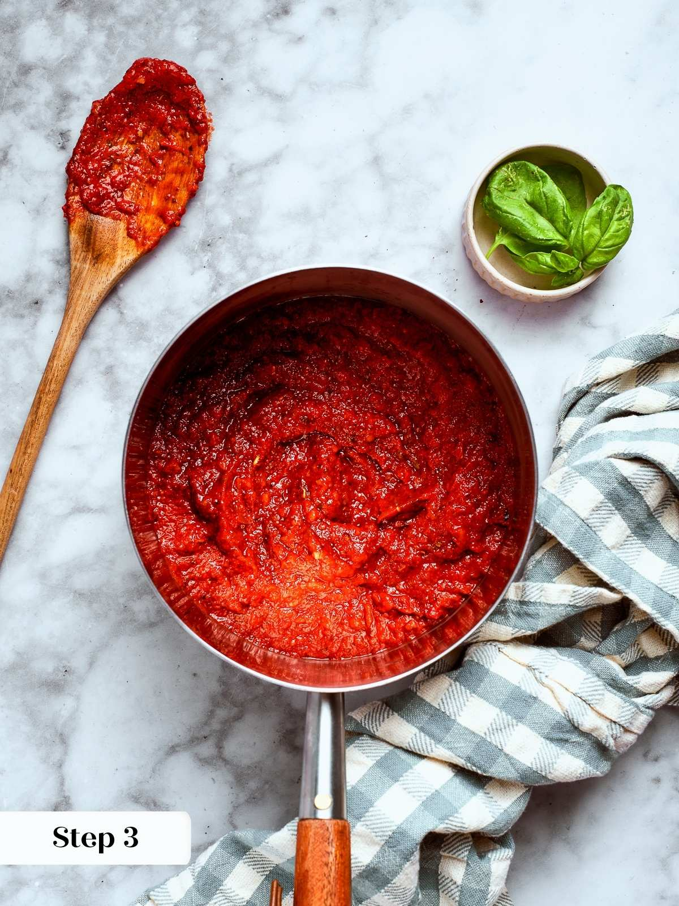
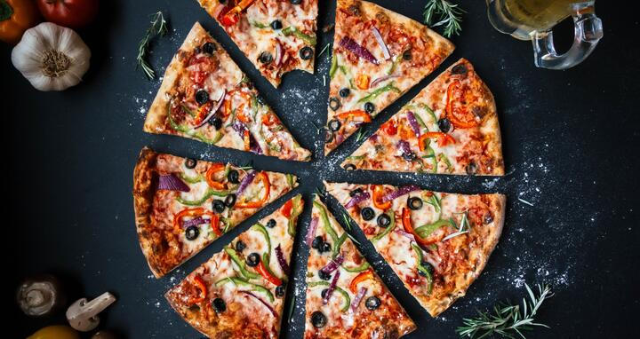

2½ Cups Flour (I use Big J Milling Co. Bakers flour but AP or 00 Pizza flour works great too!)
1 Tablespoon Kosher Salt
Extra Virgin Olive Oil
Instructions
To the warm water, add the yeast and honey. Stir to dissolve and allow mixture to sit for 3 minutes to ensure the
yeast is still alive. It should foam and start to bubble
Place the flour and salt in the bowl of an electric stand mixer (you can do this by hand but a stand mixer makes a huge
difference). Add the yeast and water mixture to and mix on low speed until the miture starts to come together.
Increase the speed to medium and continue mixing. At this point the dough should pull away from the sides of the bowl
but should remain slightly sticky at the bottom. Adjust water or flour in small increments depending on the dough until
this consistency is reached. The dough should mix for around 8 minutes.
Once the dough has finished mixing coat your hands in a bit of olive oil and form into a ball. Transfer the dough to bowl
coated in olive oil and cover with a towel. Allow to rise for one hour if you are preparing the night of or you can place in
fridge for 1 to 3 days and allow to ferment which adds a great flavor to the dough (If choosing this option bring to room temp
before baking).
The Sauce
Ingredients
¼ - ⅓ Cup Extra Virgin Olive Oil (Enough to coat the bottom of your pan)
3-4 Cloves Minced Garlic
½ Large Onion
Pinch Red Pepper Flakes
1- 15 ounce can Tomato Sauce
1- 15 ounce can Crushed Tomatoes
1 Tablespoon Dried Oregano
1 Tablespoon Dried Basil
1 Teaspoon Dried Italian Seasoning
Salt and pepper to taste

Begin with a pan on medium heat.
To the pan add enough oil to coat the bottom of the pan.
Add your onions and a pinch of salt and pepper. Sweat your onions until translucent.
Once onions are translucent add your garlic and continue cooking for 30 seconds to 1 minute or
until fragrent.
Add your red pepper flakes and allow the flakes to bloom in with the oniions and garlic for approx. 30 seconds
Add crushed tomatoes and tomato sauce. You can fill your cans with a little bit of water to clean them
out and add that to the pan as well.
Add the rest of your dried herbs to the sauce and bring to a simmer
Lower the heat and continue to cook on low stirring occasionally until the tomatoes begin to sweeten.
At this point taste and adjust for salt.
Once your sauce is complete you can begin to assemble pizzas
Assembling the pizzas
Ingredients
The dough from above or any store bought dough if desired
The sauce from above or any canned pizza sauce will do
Mozzarella Cheese
Any other toppings you desire
Assembly

45 minutes before you are ready to bake preheat your oven to 500 degrees Farenheit preferably with a pizza stone inside
On a lightly floured sheet of parchment paper for easy transfers, roll out your dough to the desired size. If you do not have a pizza
peel I would suggest adding this to a lightly oiled lasagna pan for a more Detroit style pizza.
Add a generous layer of the pizza sauce to the dough
Top with Mozzarella cheese first then whatever toppings you've chosen
Carefully transfer your pizza to the baking/pizza stone and bake for 16-18 minutes or until the edges
begin to turn dark brown and the cheese begins to golden.
Remove from oven and if using a lasagna pan transfer to a wire rack to cool and avoid the crust getting soggy